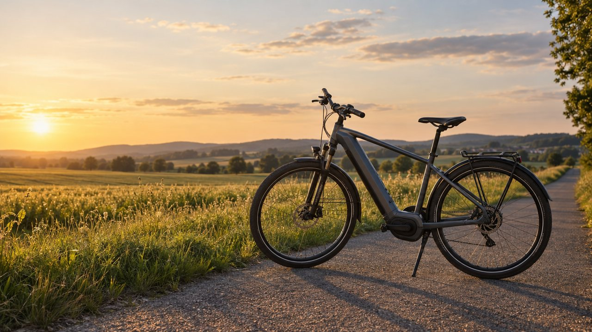
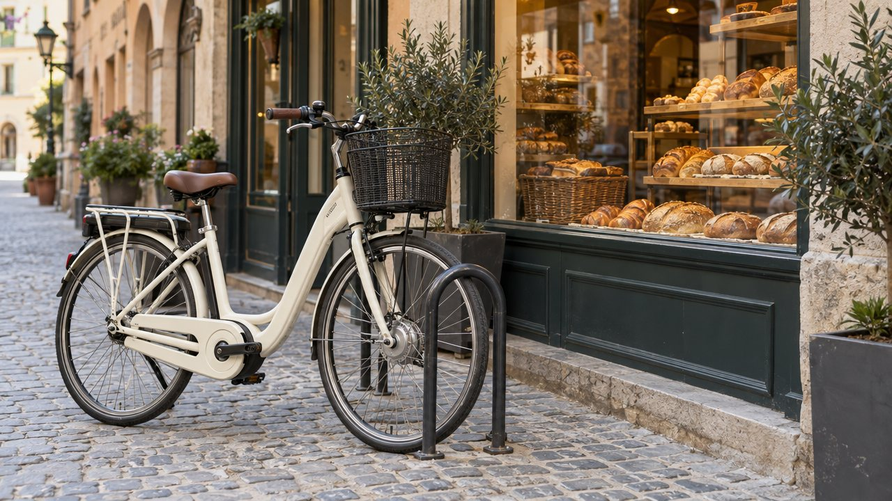
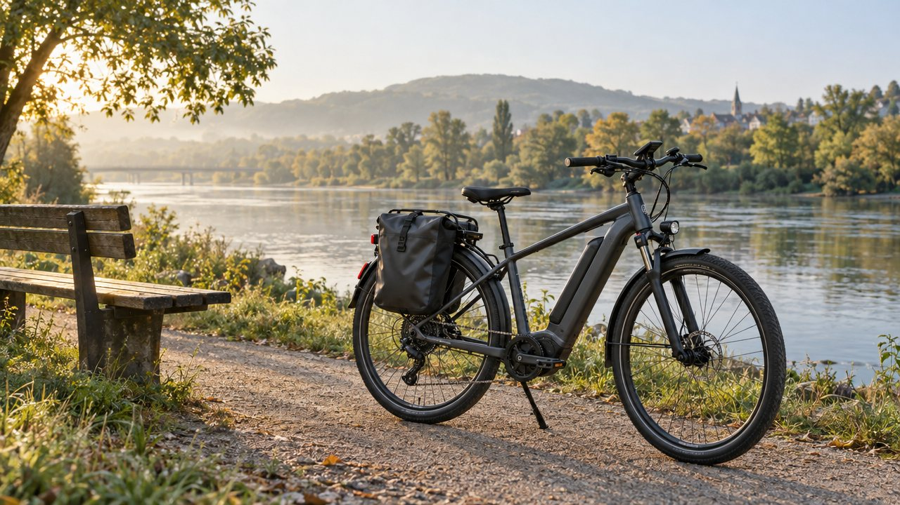
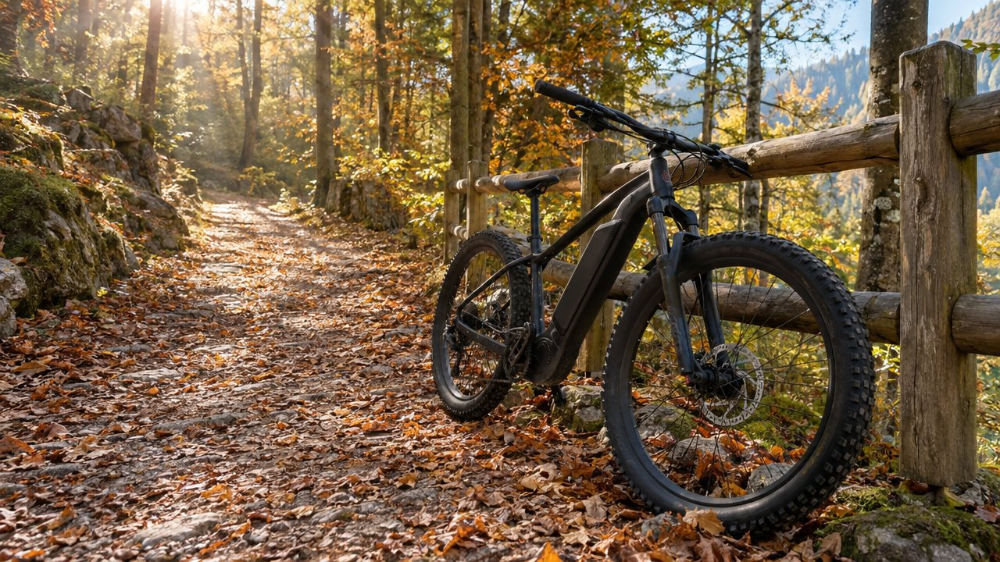
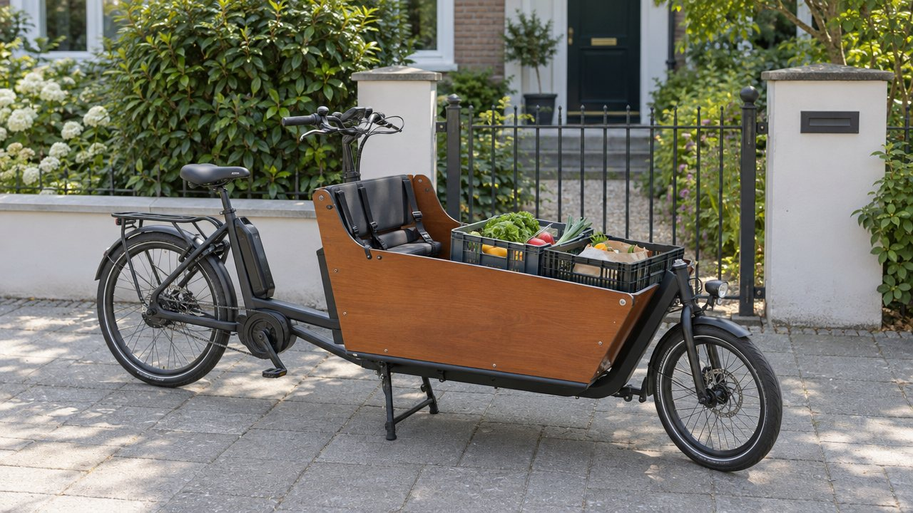
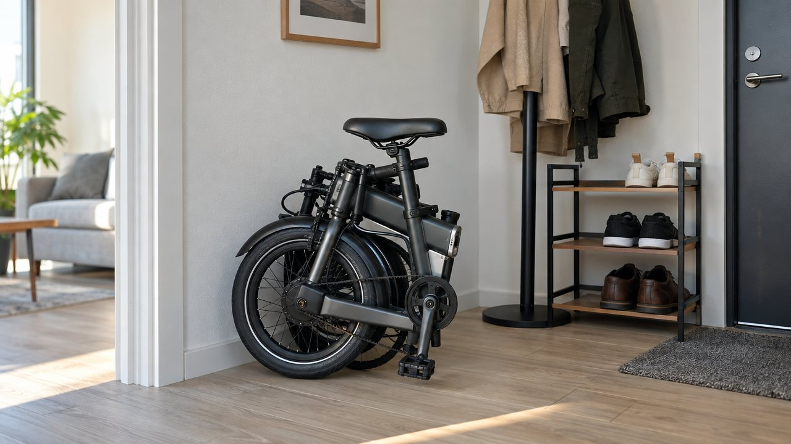
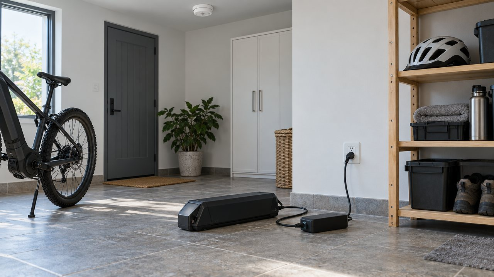
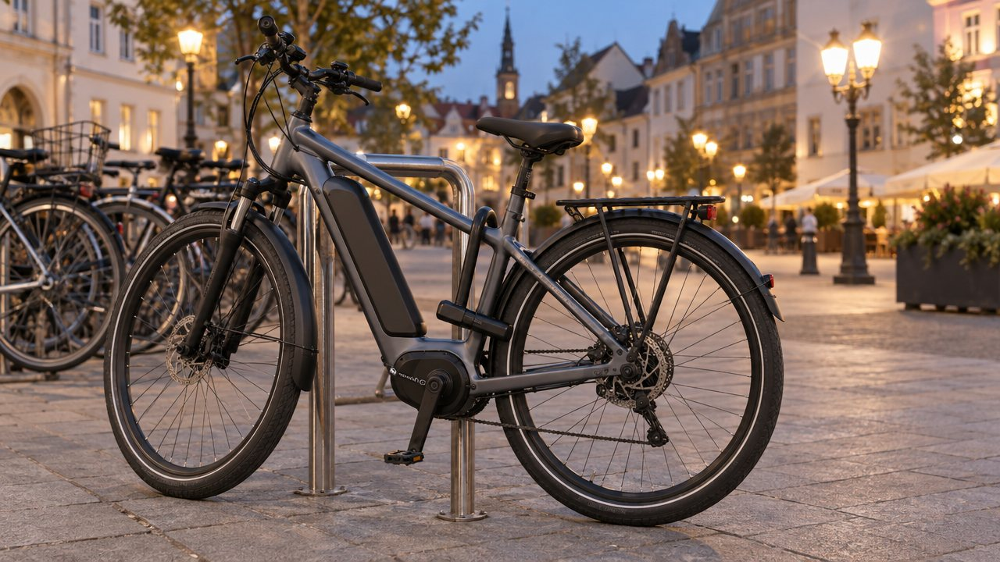
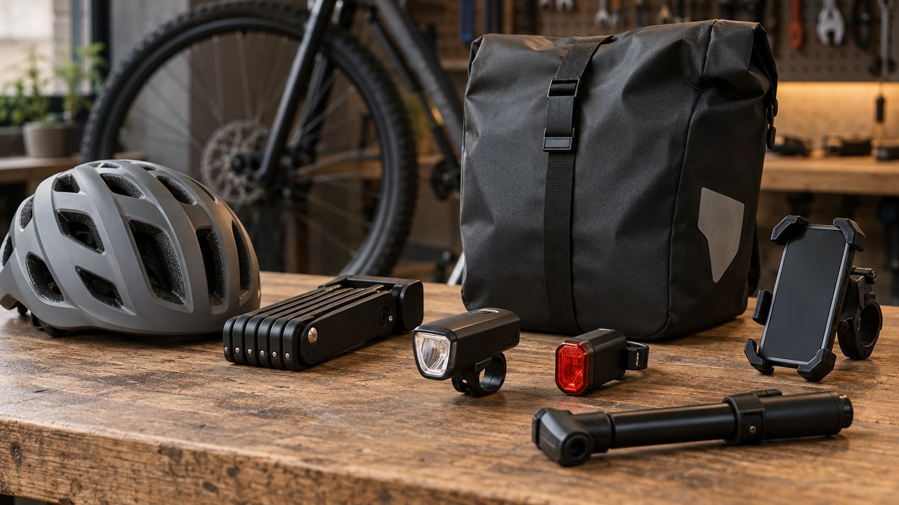

Pedelec
Der Motor hilft nur beim Treten.
- Bis 25 km/h, Motor mit höchstens 250 Watt
- Schiebehilfe bis 6 km/h erlaubt
- Kein Führerschein, kein Kennzeichen, kein Mindestalter
- Radwege wie mit dem Fahrrad
Rechner
Ratgeber
Nachschlagen
Auf dieser Seite

Welcher Typ zu dir passt, was Motor und Akku können, was eine Ladung kostet und welche Regeln gelten. Mit Rechner für deine Strecke.
Fast jedes „E-Bike“ ist rechtlich ein Pedelec: Der Motor hilft nur beim Treten, mit höchstens 250 Watt und bis 25 km/h. Dafür brauchst du laut ADAC weder Führerschein noch Kennzeichen. Eine Akkuladung reicht laut ADAC für 50 bis 100 Kilometer und kostet bei 500 Wattstunden und 35 Cent je Kilowattstunde rund 18 Cent. Der Akku hält etwa 500 bis 1.000 Ladezyklen, am längsten bei 20 bis 80 Prozent Ladestand. 2025 kostete ein E-Bike im Schnitt 2.550 € (Zweirad-Industrie-Verband).
Fast alles, was als „E-Bike“ verkauft wird, ist ein Pedelec. Rechtlich macht das einen großen Unterschied.
Der Motor hilft nur beim Treten.
Unterstützung beim Treten bis 45 km/h.
Fährt auch ohne Treten.
Angaben laut ADAC. Der ADAC rät, dass Kinder bis 14 Jahre kein Pedelec fahren. In diesem Ratgeber meint „E-Bike“ das Pedelec bis 25 km/h, wie im Alltag üblich.
2025 wurden in Deutschland rund 2 Millionen E-Bikes verkauft, im Schnitt für 2.550 €. Welcher Typ passt, hängt davon ab, wo und wie weit du fährst.
Vier Fragen, ein Vorschlag.
Der Vorschlag folgt festen Regeln: Wer Kinder oder große Lasten fährt, bekommt das Lastenrad. Wer das Rad tragen oder verstauen muss, das Faltrad. Gelände führt zum Mountainbike, kurze Stadtwege zum Cityrad, alles andere zum Trekkingrad.
Aufrecht sitzen, bequem aufsteigen, alles dran: Licht, Schutzbleche, Gepäckträger. Gemacht für kurze Wege in der Stadt.
Jedes fünfte verkaufte E-Bike war 2025 ein Cityrad (19 Prozent laut Zweirad-Industrie-Verband).

Die Links führen zu einer Suche bei Amazon.Anzeige Kauf ein E-Bike möglichst erst nach einer Probefahrt.
Der Alleskönner: schnell genug für den Arbeitsweg, bequem genug für die Tagestour, stabil genug für Gepäck.
Knapp jedes vierte verkaufte E-Bike war 2025 ein Trekkingrad (24 Prozent laut Zweirad-Industrie-Verband).

Die Links führen zu einer Suche bei Amazon.Anzeige Kauf ein E-Bike möglichst erst nach einer Probefahrt.
Breite Reifen, kräftiger Motor, starke Bremsen. Für Waldwege, Schotter und Trails.
E-Mountainbikes waren 2025 mit 38 Prozent die größte Gruppe unter den verkauften E-Bikes (Zweirad-Industrie-Verband).

Die Links führen zu einer Suche bei Amazon.Anzeige Kauf ein E-Bike möglichst erst nach einer Probefahrt.
Ersetzt für viele Wege das Auto: Kinder, Wocheneinkauf oder Werkzeug fahren in der Kiste oder auf dem langen Gepäckträger mit.
Knapp jedes zehnte verkaufte E-Bike war 2025 ein Lastenrad (9,5 Prozent laut Zweirad-Industrie-Verband).

Die Links führen zu einer Suche bei Amazon.Anzeige Kauf ein E-Bike möglichst erst nach einer Probefahrt.
Kleine Räder, klappbar oder zumindest schmal. Für Pendler mit Bahn, kleine Wohnungen und das Wohnmobil.

Die Links führen zu einer Suche bei Amazon.Anzeige Kauf ein E-Bike möglichst erst nach einer Probefahrt.
Zwei Bauteile entscheiden, wie sich ein E-Bike fährt und wie weit es kommt.
| Motor | Stärke | Schwäche |
|---|---|---|
| Mittelmotor am Tretlager | Am beliebtesten, ausgewogenes Fahrverhalten | Teurer, keine Rückgewinnung beim Rollen |
| Motor im Hinterrad | Gute Traktion, passt zu sportlichen und leichten Rädern | Hinten schwer, etwa beim Tragen über Treppen |
| Motor im Vorderrad | Häufig bei günstigen Rädern | Kann auf glattem Boden, am Berg und in Kurven durchdrehen oder wegrutschen |
Angaben laut ADAC. Räder mit Drehmomentsensor messen, wie kräftig du trittst, und unterstützen entsprechend. Einfache Trittsensoren an günstigen Rädern erkennen nur, dass sich die Pedale drehen.
Laut Stiftung Warentest bestimmt die Kapazität des Akkus allein die Reichweite nicht, und viel Motorleistung ist nicht für jeden sinnvoll.
Trag ein, was auf deinem Akku steht und wie weit du damit kommst. Der Vergleich mit dem Auto rechnet nur den Sprit.
So rechnen wir: Akku in Kilowattstunden mal Strompreis ergibt die Ladung, geteilt durch die Reichweite die Kosten je Kilometer. Ladeverluste, Verschleiß, Versicherung und Anschaffung sind nicht enthalten. Die Vorgaben sind Beispielwerte, keine Messwerte.
Was das Laden eines Elektroautos kostet, rechnet der E-Auto-Rechner.
Der Akku ist das teuerste Verschleißteil. Mit ein paar Gewohnheiten hält er deutlich länger. Alle Angaben laut ADAC.
Sicher laden: auf nicht brennbarem Untergrund, weg von Vorhängen und Polstern, nicht lange unbeaufsichtigt und mit einem Rauchmelder in der Nähe. Nach dem Laden das Ladegerät ausstecken. Brände sind laut ADAC selten.

Der Preis sagt laut Stiftung Warentest wenig über die Qualität. Im Test von zehn Urban-E-Bikes (Heft 5/2026) lagen die Preise zwischen etwa 1.200 und 3.720 €.
Die Stiftung Warentest führt 41 geprüfte E-Bikes in ihrer Datenbank (Stand 04/2026), darunter Trekking-, City-, SUV- und Urban-Räder. Die Ergebnisse stehen im Test bei test.de.
2024 wurden den Versicherern rund 135.000 gestohlene Räder gemeldet. Der Schaden lag im Schnitt bei etwa 1.190 €, so hoch wie nie. Diebe haben es vor allem auf teure Räder und E-Bikes abgesehen.
Laut Verbraucherzentrale lohnt eine eigene Fahrradversicherung meist nur bei wertvollen Rädern. Für ein Rad für 1.500 € lagen die Jahresbeiträge dort zwischen 48 und 370 €. Vergleiche vor allem Kaufpreisgrenze, Selbstbeteiligung und vorgeschriebene Schlösser.

Helm und Schloss gehören von Anfang an dazu. Der Rest macht den Alltag bequemer.
Die Links führen zu einer Suche bei Amazon.Anzeige
ROCKBROS baut seit 2010 Fahrradzubehör: Taschen, Beleuchtung, Helme, Brillen und Halterungen.

Im Alltag meinen fast alle mit „E-Bike“ ein Pedelec: Der Motor hilft nur, wenn du trittst, mit höchstens 250 Watt und bis 25 km/h. Rechtlich ist das ein Fahrrad. Ein E-Bike im engeren Sinn fährt auch ohne Treten und gilt laut ADAC in der Regel als Mofa oder Kleinkraftrad.
Für ein Pedelec bis 25 km/h nicht. Für ein S-Pedelec bis 45 km/h brauchst du laut ADAC die Fahrerlaubnis der Klasse AM, ein Versicherungskennzeichen und einen Helm.
Der ADAC nennt 50 bis 100 Kilometer im gemischten Betrieb, je nach Akku und Bedingungen. Laut Stiftung Warentest bestimmt die Kapazität des Akkus allein die Reichweite nicht: Unterstützungsstufe, Gewicht, Steigungen, Wind und Reifendruck zählen mit.
Ein Akku mit 500 Wattstunden fasst eine halbe Kilowattstunde. Bei 35 Cent je Kilowattstunde sind das rund 18 Cent, Ladeverluste nicht mitgerechnet. Mit deinen Zahlen rechnet der Rechner.
Der ADAC nennt für moderne Akkus etwa 500 bis 1.000 volle Ladezyklen oder rund 25.000 bis 60.000 Kilometer. Danach ist der Akku nicht unbedingt defekt, er fasst aber weniger. Ein Ersatzakku kostet laut ADAC 300 bis 800 €.
Pedelecs gelten als Fahrräder und sind laut Verbraucherzentrale meist mitversichert, aber nur gegen Einbruchdiebstahl, etwa aus dem verschlossenen Keller. Den Diebstahl auf der Straße deckt ein Zusatz zur Hausratversicherung oder eine eigene Fahrradversicherung. Prüfe die Versicherungssumme in deinem Vertrag.
Ja. Der ADAC nennt Brände selten und empfiehlt trotzdem: auf nicht brennbarem Untergrund laden, weg von Vorhängen und Polstern, nicht lange unbeaufsichtigt, einen Rauchmelder in der Nähe, und das Ladegerät nach dem Laden ausstecken.
Mit dem Pedelec bis 25 km/h ja, es ist rechtlich ein Fahrrad. S-Pedelecs gehören laut ADAC auf die Fahrbahn, Radwege sind grundsätzlich tabu. Baden-Württemberg und Nordrhein-Westfalen können Radwege unter Voraussetzungen freigeben.
Mehr zum Laden zu Hause: Wallbox installieren und Stromkosten je Gerät. Strom vom eigenen Balkon liefert das Balkonkraftwerk.
Geprüft am 23.11.2026. Wir haben kein Rad selbst getestet und geben keine Bewertungen aus Tests wieder. Regeln und Versicherungsbedingungen können sich ändern, maßgeblich sind Gesetz und dein Vertrag. Das ist keine Rechts- oder Versicherungsberatung.